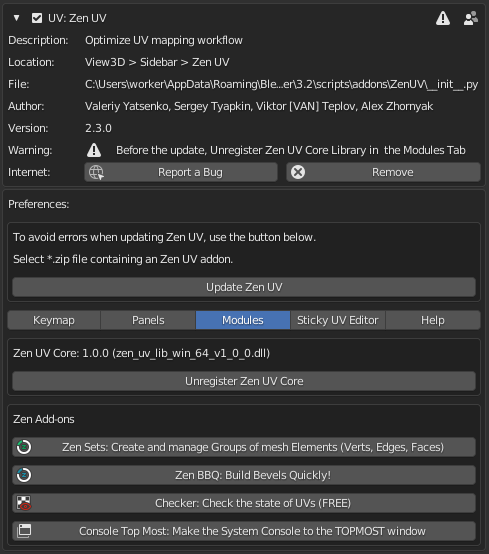
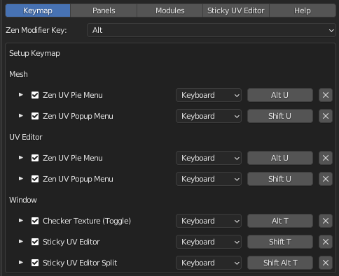

Preferences
Can be opened in a standard way.
- Be sure that the Zen UV add-on is already installed.
- Go to Edit -> Preferences -> Add-ons -> Zen UV.
Another way is to LMB click on the widget Sticky UV Editor, holding Ctrl+Shift keys.


Keymap
Configure shortcuts on some important operators of the addon.

Zen Modifier Key
The key is a modifier that is used in combination with a mouse.
Some systems, for example, Advanced UV Maps, involve the use of an additional key along with a click. Depending on the navigation settings, this key may not work. If this is your case, change Zen Modifier Key to a suitable one.